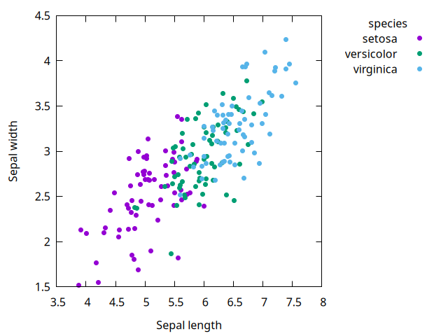
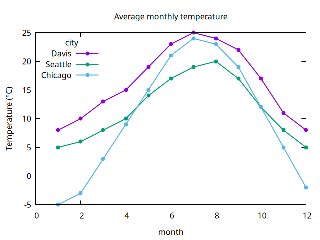
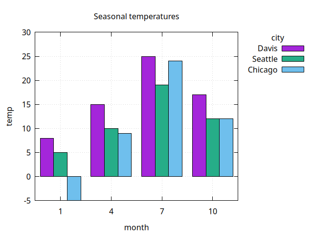
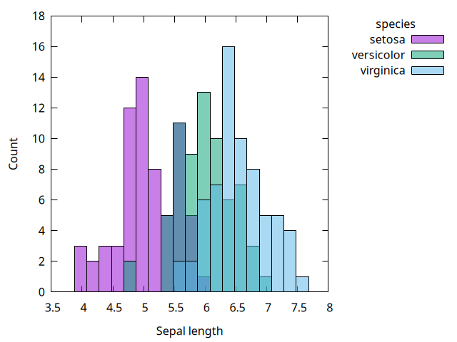
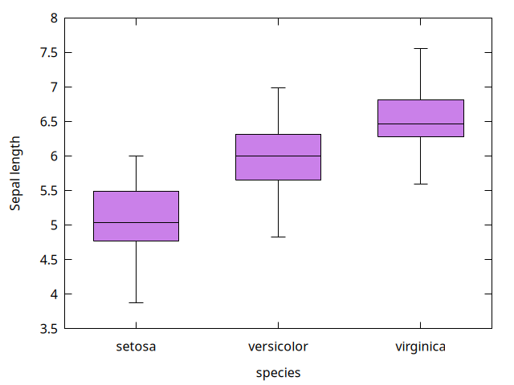

Plots¶
Each plot-* procedure draws one layer from a dataframe. Columns are given as symbols, and options follow as name/value pairs:
Each procedure opens a gnuplot window, or writes a file when 'output is given. Its return value is unspecified, unless plot-dry-run is #t.
If x holds strings (or any non-numeric values), it is treated as categorical: values are placed at evenly spaced positions in order of first appearance and labelled on the x axis. plot-bars and plot-boxplot always treat x as categorical.
Missing values ('na) are skipped.
The examples on this page use the data defined in examples/examples.ss.
(plot-points df x y . opts)¶
draws: a scatter plot of column y against column x.
options: 'pointsize (default 1) and 'pointtype (a gnuplot point type number; default 7, a filled circle), plus the options for all plots.

(plot-lines df x y . opts)¶
draws: a line plot of column y against column x. Rows are sorted by x within each group. A missing y value breaks the line.
options: 'points (#t to also draw points; default #f), 'linewidth (default 2), 'pointtype and 'pointsize (for the points), and 'sort (#f to connect rows in data order; default #t), plus the options for all plots.
> (plot-lines temps 'month 'temp 'group 'city 'points #t
'title "Average monthly temperature"
'ylabel "Temperature (°C)" 'key "top left")

(plot-bars df x y . opts)¶
draws: a bar chart with a bar of height y at each value of x. Values of y are plotted as given, like geom_col in ggplot2, not counted. With 'group, the bars for each category are drawn side by side.
options: 'fill (default 0.85), 'border (default #t), and 'width (total width at each category; default 0.8), plus the options for all plots. See Fill and border.
> (plot-bars (dataframe-filter* temps (month) (member month '(1 4 7 10)))
'month 'temp 'group 'city
'title "Seasonal temperatures" 'grid #t)

(plot-histogram df x . opts)¶
draws: a histogram of the numeric column x. With 'group, the histograms of each group overlap, with transparent fill, and share the same bins.
options: 'bins (number of bins; default from Sturges' rule, as in R's hist), 'binwidth (overrides 'bins), 'fill, and 'border, plus the options for all plots. The y axis label defaults to "Count".

(plot-boxplot df x y . opts)¶
draws: a boxplot of column y for each value of column x. Pass #f for x to draw a single box of all y values. With 'group, the boxes for each category are drawn side by side.
options: 'fill (default 0.5), 'border (default #t), 'width (total width at each category; default 0.6), and 'pointtype and 'pointsize (for the outliers), plus the options for all plots. See Fill and border.
